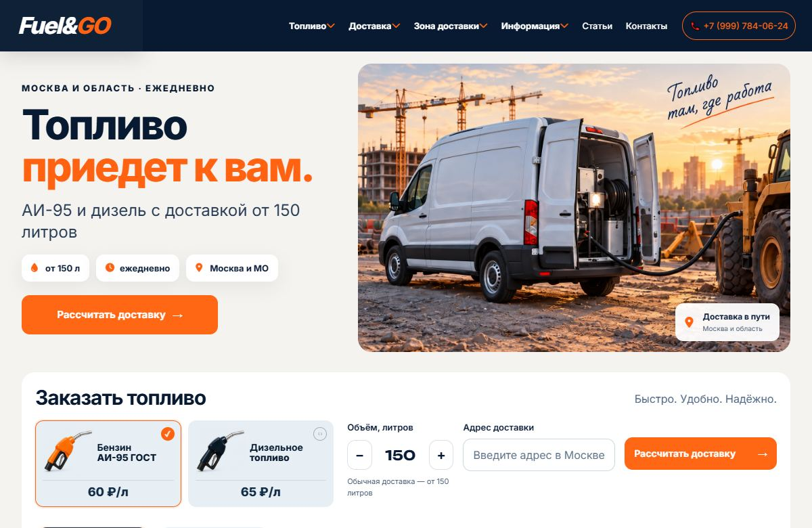

Кейс 03 / Сайт услуг · Калькулятор
Fuel&Go
Сайт доставки бензина АИ-95 и дизельного топлива по Москве и Московской области. Отдельные страницы описывают варианты доставки для стройки, генераторов и спецтехники.
fuelgomsk.ru ↗
Что реализовано
Калькулятор заказа
На главной можно выбрать топливо и объём. Калькулятор учитывает отдельный порог объёма для обычной и срочной доставки.
Управление ценами
Прайс редактируется в мобильной панели управления. Цены используются на страницах сайта и в калькуляторе.